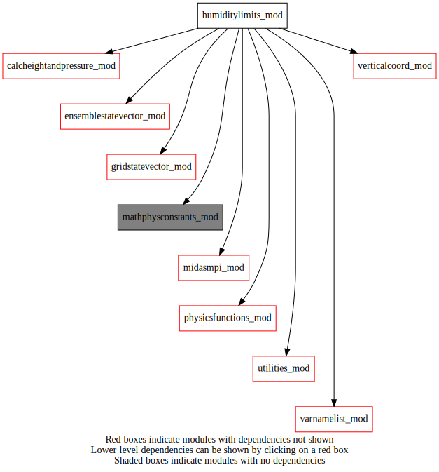
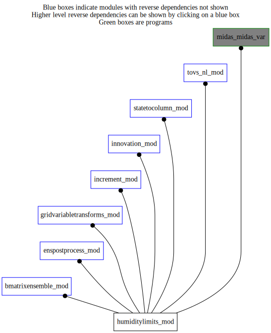

Dependency Diagrams:
 Direct Dependency Diagram¶
 Reverse Dependency Diagram¶
Description
MODULE humidityLimits_mod (prefix=’qlim’ category=’4. Data Object transformations’)
- Purpose
Various manipulations of humidity-related quantities.
Quick access
- Variables
- Routines
cloudexistinensemble(),cloudexistinstatevector(),qlim_getmaxvaluecloud(),qlim_getminvaluecloud(),qlim_lintv_minmax(),qlim_rttovlimit_ens(),qlim_rttovlimit_gsv(),qlim_saturationlimit_ens(),qlim_saturationlimit_gsv(),qlim_setmin_ens()Needed modules
midasmpi_mod: MODULE midasMpi_mod (prefix=’mmpi’ category=’8. Low-level utilities and constants’)
utilities_mod: MODULE utilities_mod (prefix=’utl’ category=’8. Low-level utilities and constants’)
mathphysconstants_mod: MODULE MathPhysConstants_mod (prefix=’mpc’ category=’8. Low-level utilities and constants’)
varnamelist_mod: MODULE varNameList (prefix=’vnl’ category=’7. Low-level data objects’)
physicsfunctions_mod: MODULE physicsFunctions_mod (prefix=’phf’ category=’8. Low-level utilities and constants’)
verticalcoord_mod: MODULE verticalcoord (prefix=’vco’ category=’7. Low-level data objects’)
gridstatevector_mod: MODULE gridStateVector_mod (prefix=’gsv’ category=’6. High-level data objects’)
ensemblestatevector_mod: MODULE ensembleStateVector_mod (prefix=’ens’ category=’6. High-level data objects’)
calcheightandpressure_mod: MODULE czp_calcHeightAndPressure (prefix=’czp’ category=’4. Data Object transformations’)Variables
- humiditylimits_mod/qlim_rttovlimit [public]¶
- humiditylimits_mod/qlim_saturationlimit [public]¶
- humiditylimits_mod/qlim_setmin [public]¶
Subroutines and functions
- subroutine humiditylimits_mod/readnamelist()¶
- Purpose
Reading NAMQLIM namelist by any subroutines in humidityLimits_mod module.
- Call to
- subroutine humiditylimits_mod/qlim_saturationlimit_gsv(statevector)¶
- Purpose
To impose saturation limit on humidity variable of a statevector
- Arguments
statevector [struct_gsv ]
- Call to
- subroutine humiditylimits_mod/qlim_saturationlimit_ens(ensemble)¶
- Purpose
To impose saturation limit on humidity variable of an ensemble
- Arguments
ensemble [struct_ens ]
- Call to
ens_getdatakind(),utl_abort(),ens_varexist(),ens_getvco(),ens_getnumlev(),ens_getlatlonbounds(),ens_getnummembers(),ens_getnumstep(),ens_getkfromlevvarname(),ens_getonelev_r4(),phf_foqst8()
- subroutine humiditylimits_mod/qlim_rttovlimit_gsv(statevector[, varname_opt[, applylimittocloud_opt]])¶
- Purpose
To impose RTTOV limits on humidity/cloud
- Arguments
statevector [struct_gsv ,inout]
- Options
varname_opt [character ,in,]
applylimittocloud_opt [logical ,in,]
- Call to
utl_abort(),vnl_iscloudvar(),gsv_varexist(),gsv_getvco(),gsv_getnumlev(),qlim_lintv_minmax(),cloudexistinstatevector(),qlim_getminvaluecloud(),qlim_getmaxvaluecloud()
- subroutine humiditylimits_mod/qlim_rttovlimit_ens(ensemble[, varname_opt[, applylimittocloud_opt]])¶
- Purpose
To impose RTTOV limits on humidity/cloud
- Arguments
ensemble [struct_ens ,inout]
- Options
varname_opt [character ,in,]
applylimittocloud_opt [logical ,in,]
- Call to
utl_abort(),vnl_iscloudvar(),ens_varexist(),ens_getdatakind(),ens_getvco(),ens_getnumlev(),ens_getnummembers(),ens_getnumstep(),ens_getlatlonbounds(),ens_getkfromlevvarname(),ens_getonelev_r4(),qlim_lintv_minmax(),cloudexistinensemble(),qlim_getminvaluecloud(),qlim_getmaxvaluecloud()
- subroutine humiditylimits_mod/qlim_lintv_minmax(press_src, qmin_src, qmax_src, numlev_src, ni_dest, nj_dest, numlev_dest, press_dest, qmin_dest, qmax_dest)¶
- Purpose
To perform the vertical interpolation in log of pressure and and constant value extrapolation of one-dimensional vectors.
- Arguments
press_src (numlev_src) [real ,in] :: Vertical levels, pressure (source)
qmin_src (numlev_src) [real ,in] :: Vectors to be interpolated (source)
qmax_src (numlev_src) [real ,in] :: Vectors to be interpolated (source)
numlev_src [integer ,in,] :: Number of input levels (source)
ni_dest [integer ,in] :: Number of profiles
nj_dest [integer ,in] :: Number of profiles
numlev_dest [integer ,in] :: Number of output levels (destination)
press_dest (*,*,*) [real ] :: Vertical levels, pressure (destination)
qmin_dest (*,*,*) [real ] :: Interpolated profiles (destination)
qmax_dest (*,*,*) [real ] :: Interpolated profiles (destination)
- Called from
- subroutine humiditylimits_mod/qlim_setmin_ens(ensemble, huminvalue)¶
- Purpose
To impose lower limit on humidity variable of an ensemble
- Arguments
ensemble [struct_ens ,inout]
huminvalue [real ,in]
- Call to
ens_getdatakind(),utl_abort(),ens_varexist(),ens_getnumlev(),ens_getlatlonbounds(),ens_getkfromlevvarname(),ens_getonelev_r4(),ens_getnumstep(),ens_getnummembers()
- function humiditylimits_mod/qlim_getminvaluecloud(varname)¶
- Purpose
Return the minValue for the hydrometeor.
- Arguments
varname [character ,in]
- Return
minvalue [real ]
- Called from
qlim_rttovlimit_gsv(),qlim_rttovlimit_ens(),inn_setupcolumnsonanlinclev(),s2c_nl(),tvs_fillprofiles(),updatecloudintovsprofile(),updatecloudintovscloudprofile()- Call to
- function humiditylimits_mod/qlim_getmaxvaluecloud(varname)¶
- Purpose
Return the maxValue for the hydrometeor.
- Arguments
varname [character ,in]
- Return
maxvalue [real ]
- Called from
qlim_rttovlimit_gsv(),qlim_rttovlimit_ens(),inn_setupcolumnsonanlinclev(),s2c_nl(),tvs_fillprofiles()- Call to
- function humiditylimits_mod/cloudexistinensemble(ensemble)¶
- Purpose
determine if any cloud variable exists in the ensemble.
- Arguments
ensemble [struct_ens ,in]
- Return
cloudexist [logical ]
- Called from
- Call to
- function humiditylimits_mod/cloudexistinstatevector(statevector)¶
- Purpose
determine if any cloud variable exists in the stateVector.
- Arguments
statevector [struct_gsv ,in]
- Return
cloudexist [logical ]
- Called from
- Call to
{kind=link}
{kind=link}